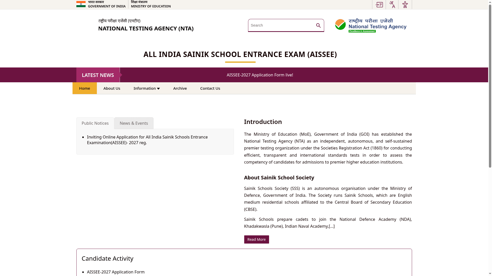

AISSEE 2027: Sainik School admission for class 6 and 9, apply by 2 December
The National Testing Agency opened AISSEE 2027 registration on 3 November 2026 for admission to classes 6 and 9 in Sainik Schools and approved New Sainik Schools for the 2027-28 academic year. Online applications close on 2 December 2026 (11:50 PM) on exams.nta.nic.in, and the OMR-based entrance exam is on 31 January 2027. Kerala's own Sainik School is at Kazhakootam in Thiruvananthapuram, and the class 6 paper is offered in Malayalam among 13 mediums.
At a glance
- What: All India Sainik Schools Entrance Examination (AISSEE) 2027, for class 6 and class 9 admission in 2027-28
- Who conducts it: National Testing Agency (NTA), for the Sainik Schools Society under the Ministry of Defence
- Application window: 3 November to 2 December 2026 (up to 11:50 PM)
- Fee: ₹850 for General, OBC (NCL) and wards of defence and ex-service personnel; ₹700 for SC and ST; non-refundable
- Late window: 3 to 6 December 2026 with a late fee of ₹500
- Exam: 31 January 2027, pen-and-paper OMR, multiple choice, no negative marking
- Where: exams.nta.nic.in/sainik-school-society
The full NTA schedule
From the official NTA public notice dated 3 November 2026:
- Online application: 3 November to 2 December 2026, up to 11:50 PM
- Fee payment (card, net banking, UPI): up to 2 December 2026, 11:50 PM
- Late submission with ₹500 late fee: 3 to 6 December 2026
- Correction window: 7 to 9 December 2026
- Exam city announcement: 11 January 2027
- Admit cards: 25 January 2027
- Exam: 31 January 2027. Class 6 from 2:00 to 4:30 PM, class 9 from 2:00 to 5:00 PM
- Results: date to be announced on the NTA website
Who can apply
- Class 6: age between 10 and 12 years as on 31 March 2027 (born between 1 April 2015 and 31 March 2017, both days inclusive). Admission is open to girls; check the seat availability for girls in the bulletin's appendix for the school you want.
- Class 9: age between 13 and 15 years as on 31 March 2027 (born between 1 April 2012 and 31 March 2014), and the child must have passed class 8 from a recognised school at the time of admission. Girls can apply subject to vacancies.
- One application per child. The same form covers Sainik Schools and approved New Sainik Schools; the fee is the same either way.
- Admission is through the AISSEE rank, followed by e-counselling, a medical fitness check and document verification. Home-state and outside-state quotas are linked to the child's domicile and the school's state.
Exam pattern
- OMR pen-and-paper test with multiple choice questions. There is no negative marking.
- Class 6: 150 minutes, offered in 13 mediums including English, Hindi and Malayalam. Class 9: 180 minutes, English only.
- Passing requirement for existing Sainik Schools: at least 25% marks in each subject and 40% in aggregate; no minimum marks are prescribed for SC and ST candidates, who are admitted on inter-se merit within their category.
Documents to keep ready
From the application section of the official bulletin:
- Candidate's photograph, JPG, 10 to 200 KB
- Candidate's signature, JPG, 10 to 50 KB
- Candidate's left-hand thumb impression, JPG, 10 to 50 KB
- Date of birth certificate issued by the competent authority
- Domicile certificate
- Caste, community or category certificate, if applicable
How to apply
Checked on the NTA AISSEE page on 10 November 2026:
- Open exams.nta.nic.in/sainik-school-society and download the Information Bulletin first; it carries the school list, tentative intake, reservation and syllabus.
- Register with a unique email ID and mobile number, then fill the online application form and note the application number.
- Upload the scanned photo, signature, thumb impression and certificates listed above.
- Pay the fee online (card, net banking or UPI) and wait for the confirmation page. If the confirmation page is not generated, the bulletin says the transaction stands cancelled and the amount is refunded; you then pay again.
- Download, save and print copies of the confirmation page. Nothing needs to be posted to NTA; the process is fully online.
- Qualified candidates must then register for e-counselling when it opens; admission follows the merit list, medical fitness and document verification.

Keep these limits in mind
- The 2 December 2026 last date and the full schedule come from the NTA's own public notice, and the fee and age limits from the official information bulletin. NTA can still revise dates; it asks candidates to keep checking the website.
- Fee once paid is not refunded or carried forward, under any circumstances, per the bulletin.
- Merely passing AISSEE does not guarantee a seat: admission depends on the merit list, e-counselling, medical fitness and document verification by the Sainik Schools Society.
- Seats for girls vary by school and class; check the school-wise intake in the bulletin before choosing.
- We read the public notice, bulletin and the AISSEE page; we did not register, log in or submit an application, and nothing was paid.
Frequently asked questions
What is the last date? 2 December 2026, up to 11:50 PM, per the NTA public notice. A late window with a ₹500 late fee runs 3 to 6 December.
What is the application fee? ₹850 for General, OBC (NCL) and wards of defence and ex-service personnel; ₹700 for SC and ST. It is non-refundable.
Is there a Sainik School in Kerala? Yes, Sainik School Kazhakootam in Thiruvananthapuram. The class 6 entrance paper is also offered in Malayalam.
Can girls apply? Yes, for class 6 in all schools, and for class 9 subject to vacancies; check the school-wise seat list in the information bulletin.
Whom do I contact for help? NTA help desk 011-40759000 or 011-69227700, or aissee@nta.ac.in.
Source: the NTA public notice Inviting Online Application for AISSEE-2027 (3 November 2026), the AISSEE 2027 information bulletin, and the AISSEE page on exams.nta.nic.in. Checked on the live pages on 10 November 2026. This is an AiCoN explainer, not an NTA or government publication.